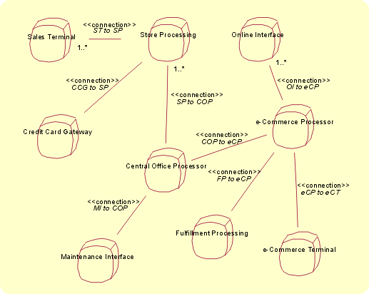
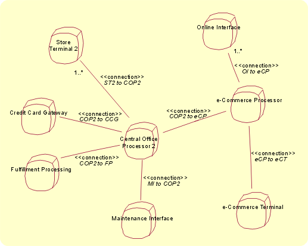

| Концепция: Локальность |
 |
|
| Связанные элементы |
|---|
ВведениеВ разделе Концепция: Архитектура системы введено понятие точек наблюдения, с которых можно рассматривать систему. В данном разделе важную роль играет физическая точка наблюдения. Эта точка наблюдения применяется для описания распределенного взаимодействия между объектами системы и обеспечивает механизмы поддержки "распределения" [цитата из публикации Architecting with RM-ODP, Janis Putman, Prentice Hall PTR]. На этом уровне в число логических объектов входят экземпляры подсистем. Модель развертывания поддерживает данную точку наблюдения путем описания физического распределения системы и физической поддержки распределенного взаимодействия логических объектов системы. Задача модели развертывания заключается в декомпозиции системы на элементы, выполняющие работу. Это осуществляется на нескольких уровнях абстракции, в число которых входят локальность (самый высокий уровень абстракции), дескриптор и реализация (самый низкий уровень абстракции, на котором приводится информация о конкретном применяемом аппаратном и программном обеспечении). Эти уровни примерно соответствуют концептуальному уровню, уровню спецификаций и физическому уровню модели развертывания (применяемой в тех случаях, когда RUP используется исключительно для разработки программного обеспечения). Наиболее часто модель развертывания проявляется на уровнях проектирования и реализации посредством диаграмм развертывания UML. Ниже приведены общие сведения об уровне анализа - концепции локальности, соответствующей физической точке наблюдения. Локальности и соединенияМодель локальности характеризует начальное, абстрактное, физическое разделение системы. Она связана с физическими ресурсами системы (узлы, устройства, датчики и их физические соединения и интерфейсы со своими физическими характеристиками, такими как вес, тепловыделение, энергопотребление, уровень вибрации и т.п.). Локальность - это характеристика точки, в которой происходит определенный процесс (обычно о локальности говорят только в контексте проектов с относительно тесной группировкой ресурсов), без указания конкретного географического расположения этой точки и без фиксации способа реализации процесса. В очень больших и сложных системах иногда сначала создается начальная модель локальностей высокого уровня, а затем каждая из них разбивается на локальности низкого уровня (подобно тому, как подсистемы могут содержать подсистемы). На уровне дескриптора указываются типы ресурсов локальности - это узлы, в число которых могут входить вычислительные устройства (серверы, рабочие станции и т.д.), люди и разнообразные электромеханические устройства. Наконец, на уровне реализации выбираются конкретные модели оборудования, устанавливается количество экземпляров ролей (если речь идет о людях), создаются наборы конфигураций, мощностей, требований к электропитанию и другим условиям эксплуатации оборудования, стоимости и производительности. Например, в модели локальности может быть показано, что система состоит из элементов, находящихся на спутнике, и элементов наземной станции. Другие примеры приведены на рисунках в разделе Диаграммы локальности. Модель развертывания также применяется для записи операций подсистемы, хранящихся в отдельных локальностях - эта информация позволяет определить, какая вычислительная мощность должна быть обеспечена в пределах локальности. На основе того, какое поведение системы должно поддерживаться в локальности, можно задавать (и описывать с помощью диаграмм взаимодействия) группы взаимодействия локальностей. Такой подход упрощает описание соединений между локальностями. На диаграммах локальности показаны начальное разделение системы на разделы, способы распределения элементов обработки и способы их соединения. Локальность вычислений может стать важным вопросом при обсуждении основных нефункциональных требований и для многих разработчиков систем это и есть "архитектура". Диаграммы локальности состоят из двух видов элементов:
По смыслу диаграммы локальности близки к диаграммам развертывания, а локальности на них представлены в виде стереотипных узлов UML. В стандарте UML узлом называется классификатор, который "... является физическим объектом, представляющим ресурс, как правило, снабженный по меньшей мере памятью, а зачастую и вычислительной мощностью. Узлами могут быть вычислительные устройства, а также человеческие ресурсы и механические системы обработки информации". UML позволяет расширить семантику узлов и связей между ними путем применения стереотипов и специальных значений. Кроме того, эти механизмы применяются для определения локальностей и соединений. Значок локальности представляет собой куб со скругленными углами (см. иллюстрации в разделе Диаграммы локальности). К каждой локальности в модели развертывания должно быть прикреплено описание производных дополнительных требований (на основе дополнительных спецификаций), характеризующих качество (надежность, простоту обслуживания, безопасность и т.п.), физические требования и требования к окружающей среде, а также ограничения на разработку (стоимость, технические риски и т.п.). Эти требования служат основой для определения фактических характеристик отдельных локальностей. Характеристики выбираются таким образом, чтобы, как минимум, было обеспечено соответствие явно заданным требованиям, а если того требует ситуация - чтобы было обеспечено соблюдение требований с запасом (например, для того чтобы система могла справиться с незапланированной нагрузкой). При описании локальностей выделяют следующие характеристики:
При описании соединений используют следующие характеристики:
По мере перехода к модели проекта можно создавать как локальности, занимающие несколько узлов, так и локальности, разделяющие один узел с другими локальностями. Благодаря высокой степени свободы определений UML локальности могут представлять самые различные вещи, которые в итоге будут реализованы как компонент аппаратной платформы, часть вычислительного ресурса или группа взаимодействующих человеческих ресурсов. Диаграммы локальностиНа следующих рисунках показаны диаграммы локальностей, иллюстрирующие различные подходы к разработке системы для торговой организации. У организации есть розничные торговые точки, центральные склады и сайт в Internet. В первом решении обработка данных осуществляется в магазинах. Во втором решении все терминалы подключены напрямую к центральному процессору. Для каждого примера можно задать характеристики локальностей, необходимые для реализации проекта. Большинство экспертов скажут, что первый пример наиболее рационален на сегодняшний день. Однако уже через несколько лет решение, представленное на втором примере, может приобрести неоспоримые преимущества.  Диаграмма локальности, пример 1  Диаграмма локальности, пример 2 |
© Copyright IBM Corp. 1987, 2006. Все права защищены.. |